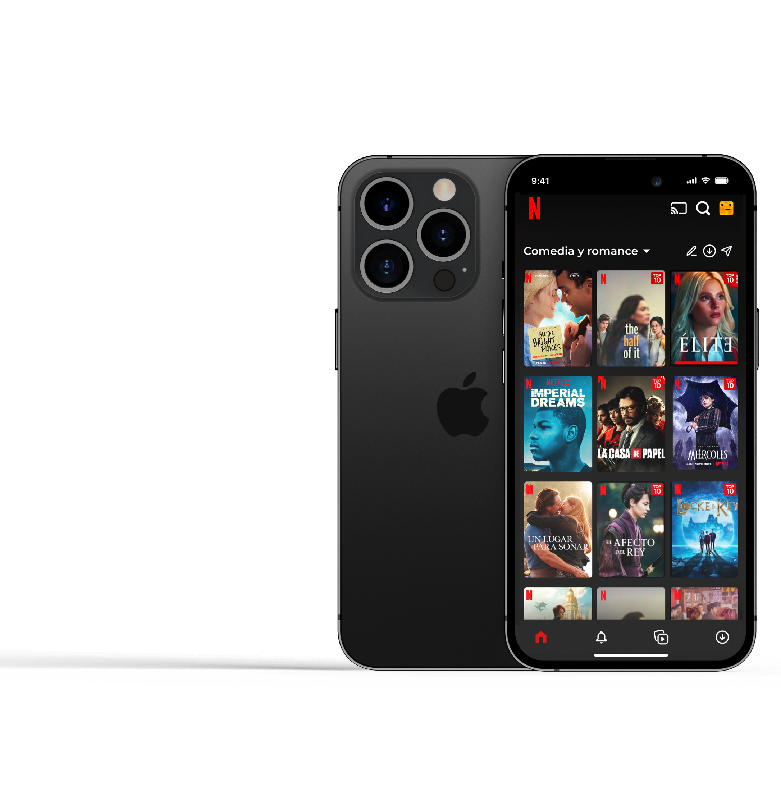

New look on the home
Easy to find the new function "My lists"

Create and customize
Create your list, give it a nameand add #tags to classify and find them faster
Organize
Find all your lists in one place. You can edit them, add more movies & series, share them...

Share in an easy way
Share your lists in a simple way, take pity on those friends who spend 10 hours looking for what to see!